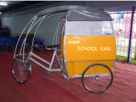
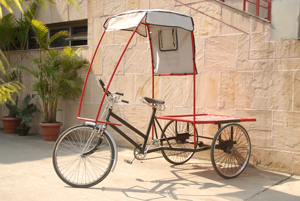
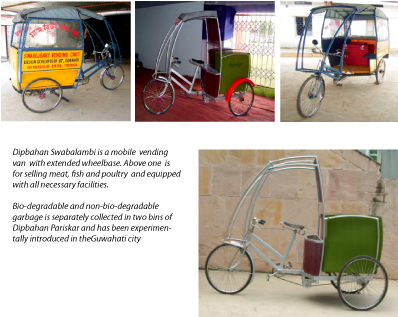

Design of variations of utility tricycles based on - Dipbahan+ for employment generation
- Socialy Responsive Design
- Semiautomatic Handloom
- IITG-KVIC TBUSemiautomatic Loin Loom
- Vegetable Dye
- Jute Weaving Semiautomatic Hanaloom
- Low Cost Dental Chair
- Transportation Design
Rubus
Ableped
Abroboat
Power tiller
Dipbahan
Dipbahan plus
Dipbahan utlity
Multi-purpose Tricycle
Vending Cart
- Equipment Design
Bamboo Proces
MRMC
- Water
Bulk- Packging Drinking water
Iron Removal Filter
- Explorations
As a follow up of Dipbahan+ design project,
Dibahan Ankur- a school childrens’ van
Dipbahan Pariskar- a garbage (Municipal solid waste) disposal van
Dipbahan Swabalambi- a mobile vending van
have been designed and developed on the same platform using modularity for deriving economic cost advantage and introduced in the market.
Dipbahan Pariskar is Garbage Disposal van based on modularity of Dipbahan+ and has identical wheel base and track.
Dipbahan Ankur is a school van with extended wheelbase carries school children safely and comfortably.
Dipbahan Goods carrier with flatbed platform for transporting variety of materials in rural, urban and semi urban areas.



...........
..dasak@iitg.ernet.in
..T: +91-361-2582454